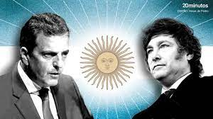

Massa domó al león

Elecciones 2023
Ministro de Economía y candidato de Unión
por la Patria se impuso con el 36 por ciento de los votos mientras que el
aspirante de La Libertad Avanza alcanzó los 30 puntos. Bullrich, tercera.
Toda la cobertura, análisis y debates en redes sociales y qué pasó en la
provincia y la Ciudad de Buenos Aires. Este domingo 22 de octubre se
desarrollaron las elecciones generales escrutadas, el candidato
presidencial de Unión por la Patria (UxP), Sergio Massa, se impone con el
36,7 por ciento de los votos, seguido por el aspirante de La Libertad
Avanza, Javier Milei, que alcanza el 30,0 por ciento. De esta manera, el
candidato del oficialismo es el más votado en todo el país y enfrentará en
la segunda vuelta del 19 de noviembre próximo al aspirante de La Libertad
Avanza. Por su parte, la candidata de Juntos por el Cambio, Patricia
Bullrich, quedó en el tercer puesto, con el 23,8 por ciento; seguida por
Juan Schiaretti, de Hacemos por Nuestro País, con el 6,8 Myriam Bregman
(Frente de Izquierda Unidad), con el 2,7por ciento de los votos. Además de
presidente y vicepresidente, los argentinos eligieron este domingo
diputados, senadores y parlamentarios del Mercosur. Mientras que las
provincias de Buenos Aires, Entre Ríos y Catamarca decidían su gobernador,
y la ciudad de Buenos Aires, su jefe de Gobierno. Seguí en tiempo real el
resultado de las elecciones y todas las alternativas de la jornada que
definirá el escenario político argentino de los próximos cuatro años.
ALBERTO AÑADIO "Felicito profundamente a Sergio Massa, el candidato más
votado de cara al balotaje, y abrazo a todo el pueblo argentino que hoy se
expresó en las urnas", escribió el mandatario en X. "Lo he dicho, Sergio
es la persona mejor preparada para garantizarle un camino de crecimiento e
igualdad a la Argentina. El pueblo argentino ha apostado a defender el
trabajo, la educación, la salud y sus derechos", agregó. Y cerró: "La
experiencia, su preocupación por quienes más necesitan, su vocación al
diálogo y su búsqueda de la unidad nacional son los ejes que nuestro país
necesita. Tenemos el talento de nuestra gente y la riqueza de nuestra
patria. El futuro es prometedor" "La grieta se murió y empieza una nueva
etapa desde el 10 de diciembre en mi gobierno, no soy de los que les gusta
insultar, ni destruir al otro, construyo consensos, así me moví toda mi
vida y así me voy a mover como presidente de la república", manifestó. El
ministro de Economía recuperó seis provincias que le había arrebatado
Milei en las PASO: Tucumán, La Rioja, La Pampa, Río Negro, Santa Cruz y
Tierra del Fuego. Y le ganó a Patricia Bullrich en Corrientes y Entre
Ríos, donde Juntos por el Cambio había triunfado en las Primarias. De cara
al balotaje del próximo 19 de noviembre, el candidato a presidente de
Unión por la Patria reconoció que "nuestro país vive una situación
difícil, compleja, llena de desafíos y dificultades. Sin embargo, creyeron
que éramos la mejor herramienta para construir". "Sé que muchos de esos
que nos votaron son los que más están sufriendo, no les voy a fallar.
Sepan que como presidente no los voy a fallar", prometió. Además, Massa
habló directamente a las otras fuerzas políticas, "a los votantes de
Myriam (Bregman) y de Juan (Schiaretti)", quienes quedaron en cuarto y
quinto lugar. Además, les habló a los militantes de la Unión Cívica
Radical, partido que forma parte de la alianza Juntos por el Cambio. "Voy
a convocar a un gobierno de unidad nacional", aseguró. El ministro de
Economía recuperó seis provincias que le había arrebatado Milei en las
PASO: Tucumán, La Rioja, La Pampa, Río Negro, Santa Cruz y Tierra del
Fuego. Y le ganó a Patricia Bullrich en Corrientes y Entre Ríos, donde
Juntos por el Cambio había triunfado en las Primarias. De cara al balotaje
del próximo 19 de noviembre, el candidato a presidente de Unión por la
Patria reconoció que "nuestro país vive una situación difícil, compleja,
llena de desafíos y dificultades. Sin embargo, creyeron que éramos la
mejor herramienta para construir". "Sé que muchos de esos que nos votaron
son los que más están sufriendo, no les voy a fallar. Sepan que como
presidente no los voy a fallar", prometió. Además, Massa habló
directamente a las otras fuerzas políticas, "a los votantes de Myriam
(Bregman) y de Juan (Schiaretti)", quienes quedaron en cuarto y quinto
lugar.